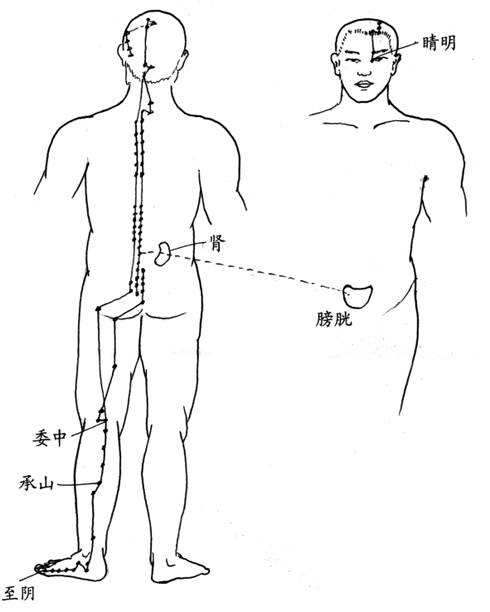
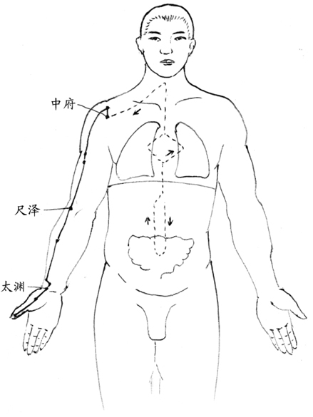
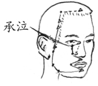
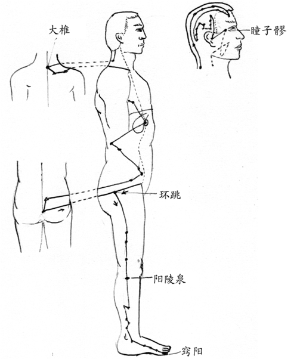
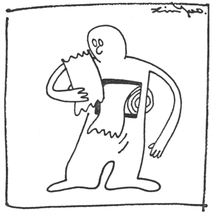

第四章 寒气
寒气是现代人很少使用的名词，感冒则是每一个人所熟知的。感冒指的是打喷嚏、流鼻水、咳嗽、头痛、发烧、喉咙痛等症状。寒气则是感冒的真正病因之一。寒气在中医并不是一个很严重的病，却影响深远祸害无穷。
打喷嚏是人体的正常机能之一，主要是用来排除进入鼻腔的异物。而鼻子里的异物种类很多，只有鼻水形式的异物我们才认定是“感冒”。因此排除鼻水才是打喷嚏的主要原因之一，治疗感冒不应该阻止打喷嚏，而是必须找出造成鼻水的原因。
由于有许多不同的原因都会造成打喷嚏、流鼻水这类的症状，从中医的观点来看，对于疾病的认定并不以其症状为主，而是以其病因为主。因此，对于受寒所造成的打喷嚏、流鼻水这类的症状，就称之为风寒。由于风寒所引起的症状非常多，自古以来许多著名的中医师都对风寒极为重视，著名的汉代名医张仲景所著的医书虽然包罗各种疾病，却以“伤寒杂病”为名，就是这个原因。
用现代科技知识可能更容易说明中医对风寒的观念，“风”和“寒”是两种不同的疾病，“风”指的是“风邪”，风字最主要的内涵是个虫字，也就是有外来的病因，一如现代医学所称的细菌或病毒。古时候的中国人虽然不知道细菌的存在，但是却猜到是有某种类似虫的东西会对人体造成疾病，对于这类疾病虽然有些预防的方法，但并没有真正能够对治的手段。
“寒气”则是中医特有的词汇。
“寒气”则是中医特有的词汇。中医所说的“气”字，有很多种不同的意义，有我们熟知的空气，也有气功师所练的无形罡气，甚至连体液也常用“气”来表示。
“寒气”指的是人体受寒时所产生的东西。从物理学的观点，热量会在所有相邻的物体之间传递，从高温的物体往低温流动。因此当人体处于低温环境时，身体的热量会不断流失，直到人体和外界温度相同为止。人体的体温下降，在医学上称之为失温，是一种会致命的危险。因此，当人体面临低温环境时，第一个防卫措施是迅速适当的降低体表的温度，缩小人体和外界的温差，降低热量流失的速度，但是人体能够下降的温度很有限。
当热量仍然迅速地流失时，人体会启动第二种防卫措施，就是利用化学的方法，燃烧某种物质，使之产生热量。这种措施必定在皮下靠近体表的部位进行，防止体内重要的器官失温。这种被燃烧的物质，通常是在体表流动的体液中的某种物质。这里所说的燃烧和我们日常所说的燃烧不完全一样，并没有真正的火焰，只是把两种不同的物质进行化学反应，使之产生热量。
人体是一个高超的化学魔术师，当受到外力造成骨头的伤害时，断裂骨头周围会因血管破裂造成内出血，这些流出的血液会围绕在断骨的周围。这时人体会分泌某种物质，把这些血液改变成骨细胞，迅速和原有的骨头结合成一体，自动修复断裂的骨骼。人体的这种修复方法，是现代医学所熟知的。
如果人体能够利用转化血液为骨细胞的方法修复骨骼，应该就能够利用转变物质产生热量的方法来防止热量的流失。化学上有许多方法能转变物质产生热量，最简单的例子就是燃烧碳分子产生热量。
C2＋2O2→2CO2＋热量
人体里到处充满了各种不同的碳水化合物（CxHyOz），适当地改变其中碳、氢、氧的比例，或加入某种物质都可能产生热量。这种方法，会使原本正常的体液改变成为低热含量的体液，同时释放出热量，弥补因外界低温所流失的热量，减低人体失温的速度。这些被改变过的体液不再能像原来的体液一样供人体使用，而成为必须排出体外的废物。这种变质的体液很可能就是中医说了几千年的“寒气”，也就是说寒气很可能不像气功一样是一种抽象概念，而是一种具体的物质，可能是液态的，也可能是固态的。
由于热量会从人体的各个部位流出，寒气的物质也就可能会出现在各个不同的部位。人体针对各个不同部位寒气的处理方法都不相同，于是形成了各种不同症状的感冒。
多数慢性病，是我们错用了身体的结果。我们需要的，不是灵丹妙药，而是一本正确的人体使用手册。

图五 膀胱经
例如，人体背后的寒气，会直接积存在膀胱经（图五）中，长期的堆积会在背后形成一层厚厚的脂肪，这些脂肪有一部分即是那些变了质的体液经过长期不断的累积而成。
头顶的寒气会直接堆在头顶上，通常头顶只有一层薄薄的皮肤，用手按压时应该是硬硬的感觉。但是寒气堆积得多了，会形成一层软软的物质，摸起来像有一层海绵垫似的。头顶的寒气更严重的会在前额左侧或右侧形成一个硬硬的肿包，到医院诊断时医生会认定为骨质增生，这是把寒气用固态的形式积存的物质。
正面的寒气，上半身会积存在肺经和其经别（经络的分支）（图六）中，这两组经别在人体胸前中线的两侧。正面的寒气也会积存在胃经（图七）中，胃经从眼部下方一直延伸到脚趾，在大腿正面是最容易积存寒气的部位。严重的胃经寒气堆积，会使大腿正面形成一层硬而厚的组织，使得大腿的伸缩发生问题，因而造成行动不便。这种疾病很少医生能够诊断出和胃有关联，经常都成为难以医治的疑难杂症，跛了数十年无论如何均难以想象是由于胃经的寒气所造成的。
侧面的寒气则积存在胆经（图八）中，只要寒气侵入人体，这个部位都无法幸免。这个部位的寒气有时会在大腿外侧形成一条条的横纹，由于寒气的物质会阻碍经络的流通，使寒气堆积的部位附近，细胞所产生的垃圾无法排出，寒气和垃圾累积多了就会使大腿外侧显得特别胖。
多数慢性病，是我们错用了身体的结果。我们需要的，不是灵丹妙药，而是一本正确的人体使用手册。

图六 肺经

图七 胃经
很多人身体力行地奉行本书中的一式三招及健康观念，健康真的就这么得到了。

图八 胆经
敲胆经一方面能刺激胆经，强迫其分泌胆汁；另一方面使这些堆积的废物能够流动，进而排出体外。
由于这些废物不是人体的组织，因此会在组织之间流动，如果这个人喜欢运动，大腿部位寒气和组织废物所形成的垃圾会往下流动，转而堆积到小腿肚上，形成萝卜腿。通常男人较女人活动力大些，因而女人多数堆在大腿外侧，男人则大多堆在小腿肚上。这种现象即是本书前面所说寒气所造成胆经阻塞的原始原因，也就是胆经的寒气堆积造成胆功能受阻，再造成吸收的障碍。敲胆经一方面能刺激胆经，强迫其分泌胆汁；另一方面使这些堆积的废物能够流动，进而排出体外。
寒气从人体的皮肤进入身体之后，如果所承受的寒气分量不多，同时血气充足经络畅通，则很快的身体会将寒气从表皮受寒的部位运送到排泄通道，鼻腔是最主要的通道之一，透过一两个喷嚏就排出体外。如果受寒的面积很大，或周围的温度很低，流失的热量很多，身体产生大量寒气（变质的体液），一时无法将寒气排出体外，很可能就会出现生病的症状，这些症状的产生主要是身体排泄寒气时的现象。这时身体必须耗费大量的能量来驱除寒气，因而使人体呈现非常虚弱的状态。这时最好的应对方法是多休息，把所有的能量留给身体用来驱除寒气。
鼻腔是寒气最常见的出口，当少量的寒气到达鼻腔时，立即造成鼻塞；分量增多时，即出现打喷嚏的症状；分量再增加时，则出现流鼻水的症状，这时的鼻水多数是略低于体温，感觉凉凉的。通常开始流鼻水就是排除寒气的尾声，鼻水流完感冒也就好了。
中医古书里说，寒气先堆积在皮下的经络理，也就是书中所说的“腠理”，时间久了会转移到相应的“腑”中，例如常见的“胃寒”即是这样形成的，当这种现象产生时，用手摸胃部，可以直接感觉其温度特别低，有时会和肚脐的温差大到6～7℃。
寒气在身体中更久，或更大量的寒气侵入时，会逐渐转移到肺脏，形成中医所说的肺虚现象，所谓肺虚就是肺的寒气太多导致肺功能逐渐减低。在人体中，肺脏除了担负我们所熟知的呼吸功能之外，还是身体分布水分到各个部位的主要机构。当寒气侵入肺脏时，肺脏的能力即随之下降，身体吸收及处理水分的能力也就跟着下降。这时大多数的水分一进入人体即排出体外，感觉一喝水就想上厕所，小便也多数呈现清澈无味。由于水分吸收的障碍，使得人体组织里的水分比例愈来愈少，外表愈来愈瘦，同时皮肤上的光泽也日渐减少，并且愈来愈黑。通常中医的望诊，黑而无光泽的脸色即是肺气虚弱的表象。随着肺气的逐渐虚弱，情绪上也会愈来愈悲观，很容易就会有忍不住想哭的感觉，就像中医书上所说的“肺主悲”。
严格地说，寒气侵入人体时，人体只有外表缓慢的变化，并没有不舒服的症状或感觉，多数不舒服的感觉来自寒气排除的过程。存在身体不同部位的寒气排出时，症状都不一样，当然应变的对策也就不同。因此，明白了寒气的原因之后，最重要的就是要学会正确的处理寒气排出的症状。
寒气的排除
许多人感冒时，常常会出现身体发冷的症状，寒冷的感觉像是来自身体的深处，盖再多的棉被也没有用。显然这时身体的某些部位是处于低温的状态，但是这种状态并不会持续很久，通常都是过一会儿就不再冷了。
前面提过身体面对寒气侵入时，会产生某种化学反应，使体液中的化学成分发生变化，释放热量来防止身体失温。这些被改变的物质也就是寒气，如果它没有被排出去就会长期存在身体里。当身体状况改善有了足够的能量之后，身体会再利用相反的化学手段，将含有寒气的物质还原。由于当初改变物质时释放了热量，这时再把物质改变回来，自然会从周围吸收大量的热量，使得其周围组织或体液的温度下降。身体再将这些低温的体液或废气排出去，就把寒气带了出去。因此，这时会感觉寒冷来自体内，鼻尖摸起来也是冰冰的感觉，似乎和鼻尖相连的一连串组织的温度都变低了。打喷嚏或咳嗽时所呼出的气体或感冒所流出的鼻水都呈现低温的状态，不像平时打哈欠时呼出的都是热气。
必须先养足了血气，使身体具备了足够的能量，自己发动驱赶寒气的战争，寒气才有可能被排出。
从这样的推论，显然感冒症状的出现并不是由于身体变弱了，相反的却是身体由弱转强时才会出现的症状。许多从来不感冒的人，并不是身体真的很强健，反而是身体根本没有能力排除任何寒气，才没有任何不舒服的症状产生。许多脸色黑而干，明显肺虚症状的人，都是很多年没有感冒的经验，这种人从外表的症状显现出身上的寒气很重，却没有能力排除。
这种没有能力排除寒气的人，使用任何药物都无法将经络中或深藏肺脏的寒气排出。必须先养足了血气，使身体具备了足够的能量，自己发动驱赶寒气的战争，寒气才有可能被排出。在这过程中，人类有限的医疗技术只能在最后当人体开始排泄寒气时，加上很小部分的助力。
膀胱经的寒气排出时会出现整个肩背酸软或酸痛。
因此，无论是哪一种寒气，对付寒气的方法，都必须回归到前面所说的养成良好的生活习惯提升血气，正确地处理每一个疾病的症状，没有什么快捷方式，更没有什么仙丹妙药。
寒气的正确处理方法
感冒的症状有很多种，大致上包括打喷嚏、流鼻水、咳嗽、头痛、全身酸软或酸痛、发烧、喉咙痛等。人体不同深度或部位排出的寒气，会形成不同的症状。因此，大致上可以就症状和寒气的原因分为身体背后经络寒气、身体前面经络寒气的排出和肺脏寒气的排出三大类。
身体背后的经络主要是膀胱经，由于膀胱经所在的背部面积很大，而且在人体最容易受寒的部位，因此许多人都有大量寒气存在这个部位。膀胱经的寒气排出时会出现整个肩背酸软或酸痛。由于膀胱经贯穿整个头部，因此，会出现后脑部位肿胀头痛或偏头痛的感觉，眉头附近的印堂部位会隐隐作痛，按摩耳后的风池穴会有强烈的疼痛感。喉咙也会出现不适的症状或咳嗽，这些都是膀胱经寒气排出时的症状。夏天中暑时也经常会有这种感觉，两种情形都是背后膀胱经阻塞的症状。
身体前面经络的寒气排出时，最典型的症状是鼻塞、打喷嚏、流鼻水，有时候还会出现水泻。
排除膀胱经寒气出现不舒服症状时，最简单的应对方法是刮痧，由于背部是膀胱经主要的穴位所在，几乎整个背部的左右两侧都是膀胱经分布的部位。因此，只要在颈后、背部和前额刮痧，使经络通畅，刮完痧睡个觉，大概不舒适的感觉就不见了。
另外，当刚开始出现头疼时，可以多喝沙士，然后出去晒个太阳，所谓晒太阳，在冬天可以直射，夏天就只要在树阴下光线较强的地方即可，通常是半个小时后症状就自然消除了。另外，喝杯桂圆红枣茶，再睡个好觉，也能将症状消除一部分。
身体前面经络的寒气排出时，最典型的症状是鼻塞、打喷嚏、流鼻水，有时候还会出现水泻。这些症状和肺里寒气排出时相同，分辨的方法是用手触摸额头和鼻尖，再和脸部其它部位的温度相比较。如果额头的温度较低，则这些症状是身体前面经络中的寒气排出，如果是鼻尖的温度较低，则是肺里寒气的排出。经络中的寒气排除不会造成咳嗽也不容易出现发烧，肺里寒气排出时则很容易出现咳嗽和发烧。
身体前面存放寒气的经络主要是胃经和大肠经。因此，在寒气排出的同时，肠胃也会出现不适的症状。最常出现的是胀气，有时也会出现不停地想吃零食的状况，但大便却不顺畅，直到大便顺畅时感冒也就快好了。和排除膀胱经的寒气相同，这时最好的策略是休养生息，让身体集中能量将寒气排出体外，可以适当地喝些桂圆红枣茶提升身体的能量，协助身体排除寒气。
通常是身体愈强的人驱赶寒气的力度愈猛，感冒的程度也愈严重。
鼻尖的温度变低，是寒气从肺里出来最明显的症状。通常这种低温会早于各种有感觉的症状之前出现。有些人的眼白这时也会出现淡淡的蓝色，特别是儿童最容易有这种情形，做母亲的人一看到小孩眼白变蓝时，就应该摸摸他的鼻尖，如果也变得冰了，那么就必须先有小孩即将感冒的心理准备。可以在家中先预备好退烧药，当体温升到三十八度半以上时就先用退烧药防止身体造成伤害。鼻尖低温或眼白变蓝的症状出现了一两天，就会开始出现感冒的症状。如果前期低温的时间很长（三天至一星期），再出现症状，则这次的感冒必定很严重，很可能会出现持续高烧不退。似乎是人体酝酿了长时间才将寒气驱出，因此特别严重。通常是身体愈强的人驱赶寒气的力度愈猛，感冒的程度也愈严重。
肺里寒气出现的咳嗽所呼出的气体，总是凉凉的。这种咳嗽应该视之为一种深度的呼吸，并不是疾病。是人体正常的功能，用来将深藏在肺脏深处的寒气排出去的手段。
正确地分辨“哪些症状由疾病造成”，“哪些症状是人体正常的功能所引起”是非常重要的。当认定咳嗽是人体的正常功能，目的是排除肺里的寒气，面对这种咳嗽，就不需要急着用药物将之终止，而是寻求提升人体排除寒气能力的方法，把寒气彻底地排出体外。
传统中国民间利用姜汤来增强身体的热能，或中西医都提倡的多休息等，都是提高身体的能量来加快排除寒气的良好方法。
传统中国民间利用姜汤来增强身体的热能，或中西医都提倡的多休息等，都是提高身体的能量来加快排除寒气的良好方法。这些正确的方法，有时并不会使症状减弱，甚至常会使症状更严重。因为身体的能力增强之后，反而会有更大的力度来排除寒气，身体需要排出更多的垃圾，当然会更不舒服。这种情形虽然会出现暂时更严重的症状，但整个生病的时间会缩短，而且寒气真正被排了出去。
如何减少寒气的侵入
既然寒气的为害如此之大，每一个人又很难完全避免寒气的侵入，只有在日常生活中建立正确的观念，尽量减少寒气的侵入。以下是防止寒气侵入的几个主要方法。
避免淋雨
这是许多浪漫的年轻人喜欢经历小说和电影中场景的行为，由于现代年轻人大多晚睡以致血气普遍不足，身体对于淋雨所侵入的寒气不容易立即将之驱出，因此也就不会有任何症状，大多数人也就天真地认为自己的身体很强壮，足以经受这么一点小雨。久而久之面对这种小雨就完全不在意。

疾病其实就是我们平时生活的忠实记录。
其实这种淋雨会在头顶和身上其他受寒的部位留下寒气，经常淋雨的人，头顶多半会生成一层厚厚软软的“脂肪”，这些脂肪就是寒气物质。等身体哪一天休息够了，血气上升就会开始排泄这些寒气，由于长时间累积了大量的寒气，身体需要借助不断的打喷嚏、流鼻水的方式将之排除，这时又会由于频繁的打喷嚏、流鼻水而被医生认定为过敏性鼻炎。很可能由于年轻时贪图一时的浪漫，却要耗费许多年甚至大半生来承受过敏性鼻炎的痛苦，实在不明智。
洗头必须吹干
许多人洗头都有懒得吹干的习惯，有些人甚至用布将洗过的头包住，这些行为都会促使头顶吸入过量的寒气，其结果和淋雨有相同的后果。
游泳也是寒气进入身体最主要的途径之一。
游泳时必须注意的事项
游泳是一件现代人很重要的运动和喜好，对身体也确实有好处，但是游泳也是寒气进入身体最主要的途径之一。和淋雨相同的是这些寒气大多数不会实时反应，使多数人不认为游泳和寒气有什么关系。多数喜欢游泳的人经常从水中出来时，都会感觉特别冷，特别是一阵风吹来禁不住打一个寒颤，这种感觉即是寒气侵入身体最具体的感受。
喜欢游泳的人最好选择没有风的室内温水游泳池，减少受寒的机会。同时在每次游泳的前后各喝一杯姜茶，加强身体对抗寒气的能力。
至于某些人喜好冬泳的习惯，从寒气的观点，那是最愚蠢的运动。自然界没有哪一种和人类近似结构的动物有这种行为，上帝在设计人体时并没有考虑到有人会把这种运动当成喜好，喜欢这种运动的朋友只好自求多福了。
给这些朋友的忠告是：一时没有症状并不表示寒气就没有侵入身体，个人的意志力可以让人体忍受这种刺激，却无法改变寒气侵入身体的事实。
驱除寒气，不是等到身体出现了症状再行处理。
家中常备姜茶
在一些中国古装戏剧中，常常看到有人淋了雨，长辈立刻要人准备一碗姜茶给淋了雨的人喝。这是非常重要的常识，一个人淋了雨，或受了风寒，无论他自己或旁人都知道他受了寒，就应该在这个时候喝姜茶，驱除寒气，不是等到身体出现了症状再行处理。